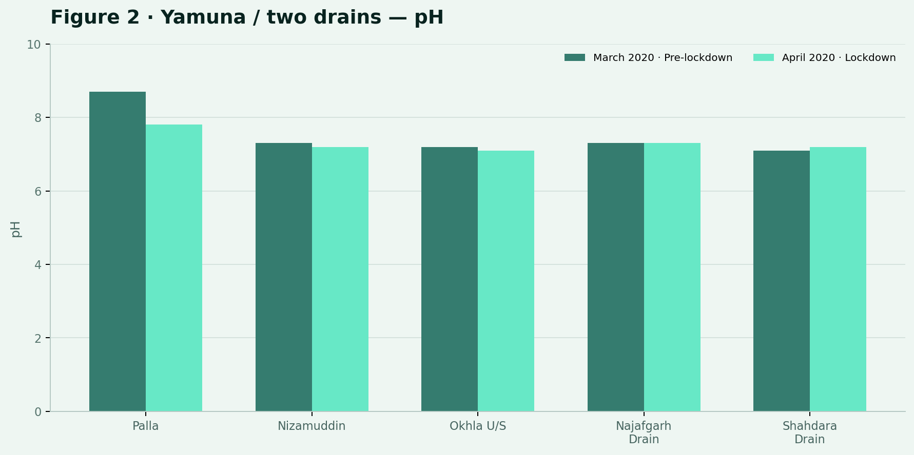
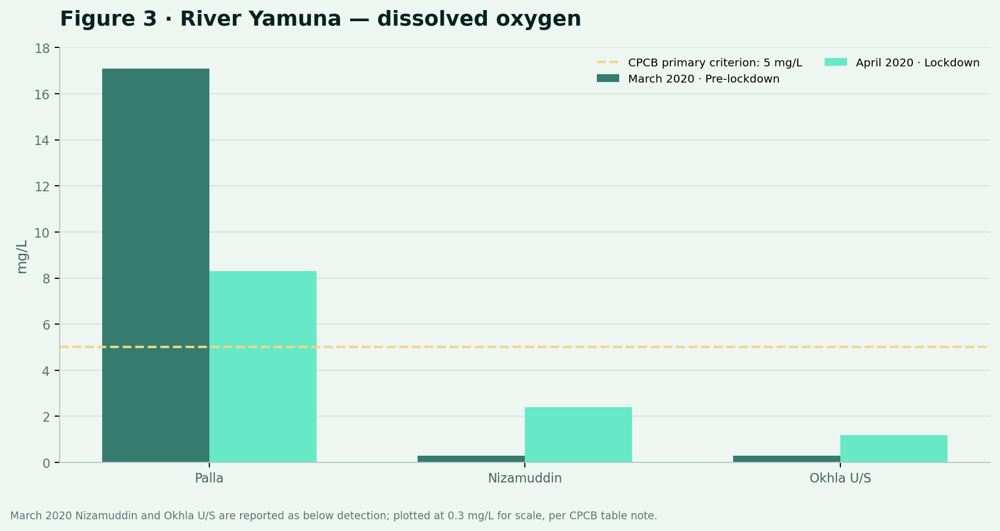
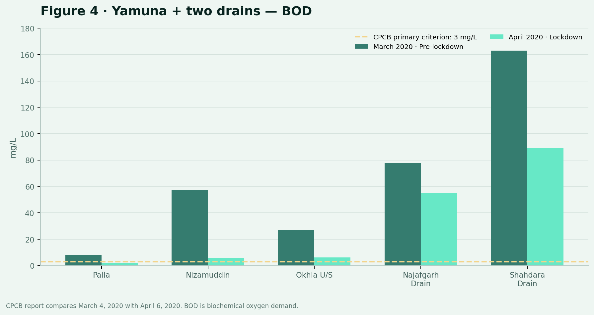

⌁
Industrial discharge
Untreated or inadequately treated effluent can introduce chemicals, metals and organic pollutants into water bodies.
A digital approach to understanding water quality in India — combining sensors, data, mapping and analysis to turn scattered measurements into actionable information.
Water can look clean and still contain changes in dissolved oxygen, organic load, salts, metals or microbial contamination. Monitoring turns those hidden changes into measurable signals.
Untreated or inadequately treated effluent can introduce chemicals, metals and organic pollutants into water bodies.
Sewage, stormwater and solid waste can change oxygen demand and microbial quality in rivers and lakes.
Fertilisers, pesticides and soil can enter surface water through runoff, especially during rainfall events.
Digital systems can collect measurements faster, attach location and time, visualise patterns and support earlier responses.
This project video connects the visible problem of water pollution with the role of digital monitoring. Watch the full sequence before exploring the technologies and data systems behind the idea.
No single technology solves water pollution. The strength comes from connecting different kinds of observations.
Field sensors can measure selected parameters continuously and transmit readings to a digital platform.
REAL-TIMELocation-based data helps compare monitoring stations, pollution hotspots and nearby land-use patterns.
SPATIALSatellite observations can support broad-area monitoring of water bodies and surrounding environmental change.
LARGE AREAModels can identify patterns, compare trends and potentially flag unusual measurements for investigation.
PATTERN FINDINGThe CPCB datasets on the National Water Data Portal include physical, chemical and biological water-quality parameters. These measurements can be connected with station IDs, dates and geographic information.
pH indicates how acidic or alkaline the water is. It is one part of a wider water-quality assessment and should be interpreted with other measurements.
Instead of creating illustrative graphs, this section uses figures based directly on the Central Pollution Control Board's published Yamuna report. The comparison is historical: March 2020 (pre-lockdown) versus April 2020 (lockdown).



| Location | pH · Mar | pH · Apr | DO · Mar | DO · Apr | BOD · Mar | BOD · Apr |
|---|---|---|---|---|---|---|
| Palla | 8.7 | 7.8 | 17.1 | 8.3 | 7.9 | 2.0 |
| Nizamuddin | 7.3 | 7.2 | BDL | 2.4 | 57 | 5.6 |
| Okhla U/S | 7.2 | 7.1 | BDL | 1.2 | 27 | 6.1 |
| Najafgarh Drain | 7.3 | 7.3 | — | — | 78 | 55 |
| Shahdara Drain | 7.1 | 7.2 | — | — | 163 | 89 |
Source: CPCB, Report on Assessment of Impact of Lock Down on Water Quality of River Yamuna – Delhi Stretch, Figures 2–4 and Tables 1–2. “BDL” = below detection limit. Values are historical and shown for academic analysis.
The official report gives a useful lesson for digital monitoring: location matters. Along the Delhi stretch, the measurements change substantially between stations, so a single city-wide number would hide the spatial story.
The reported pH values mostly sit in a comparatively narrow range, while DO and BOD show much larger differences. Water quality needs multiple indicators.
The CPCB report shows very low dissolved oxygen at downstream Delhi stations alongside much higher BOD values. Together these indicators are more informative than either alone.
Comparing Palla, Nizamuddin, Okhla and major drains shows why GIS-linked monitoring can help identify where conditions change and where investigation should focus.
Digital monitoring does not replace field sampling or laboratory analysis. It helps organise observations, attach time and place, visualise patterns and support faster interpretation.
Collect observations using field instruments, sensors or laboratory testing.
Store each result with a date, station identifier and geographic context.
Use GIS to connect water-quality measurements with their physical locations.
Compare stations, time periods and selected indicators to reveal patterns.
Use unusual results as a reason for verification, investigation and environmental action.
For this project, the Delhi stretch of the Yamuna is used as the case study. CPCB monitoring identifies stations such as Palla, Nizamuddin and Okhla, together with major drains that contribute wastewater. The official 2020 report gives us a compact example of how station-based measurements can reveal spatial differences.
Digital monitoring becomes valuable when data is reliable, accessible and connected to environmental management.
Use digital sensing where appropriate to complement periodic sampling and laboratory analysis.
Make environmental information easier for students, citizens, researchers and planners to interpret.
Combine station data, GIS and analytics to identify places that deserve closer investigation.
Digital reporting tools can help communities document visible pollution and local environmental concerns.
Academic awareness project. Replace the details below with your actual course, university, group members and roll numbers.
The dashboard visuals in this version have been replaced with official CPCB evidence. The National Water Data Portal remains the project's recommended starting point for newer downloadable CPCB observations; its Delhi biological resource was last updated January 24, 2026 and is offered as an open CSV resource.